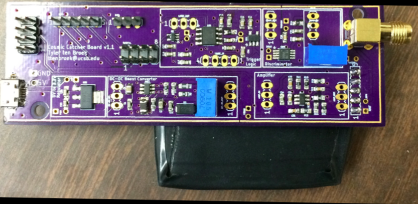

Projects!
This section is a small component of some relevant projects I've worked on recently.
Cosmic Ray Detector!


- To the left is the motherboard for our detector which Dr. Stuart built for us, and to the right is the signal amplifier I designed. As you can see, my soldering skills could use improvement!